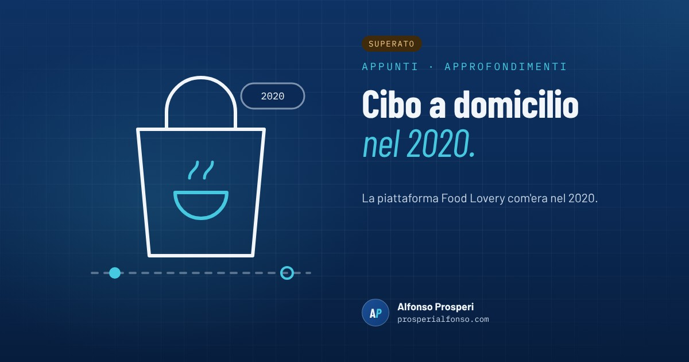

Questo articolo, del novembre 2020, presentava Food Lovery, una piattaforma italiana di consegne di cibo a domicilio. Lo lasciamo come riferimento.
All'epoca Food Lovery, nata nel 2018, era presente in 35 zone del centro Italia con oltre 700 ristoranti affiliati e altre zone in apertura. Con la pandemia il cibo a domicilio era cresciuto molto, e nel primo semestre del 2020 l'azienda dichiarava un aumento del fatturato del 400% rispetto al 2019.
Come era organizzato il servizio
Il modello si basava su più figure: la casa madre, i franchising, i city manager e altre figure per il marketing e la ricerca di clienti, e infine i driver che consegnavano gli ordini. C'erano tre app diverse:
- Food Lovery, per chi ordinava;
- Food Lovery Partner, per i ristoranti;
- Food Lovery Driver, per chi effettuava le consegne.
Tutto il percorso, dall'ordine alla consegna, era tracciato dal sistema, per tenere in contatto cliente, ristorante, driver e assistenza. Il servizio puntava su ristoranti selezionati, consegne rapide e un supporto centralizzato.
Le opportunità di allora
Dal sito si poteva chiedere di aprire un franchising, diventare partner come ristoratore, city manager, key manager, social media manager o driver, anche come secondo lavoro.